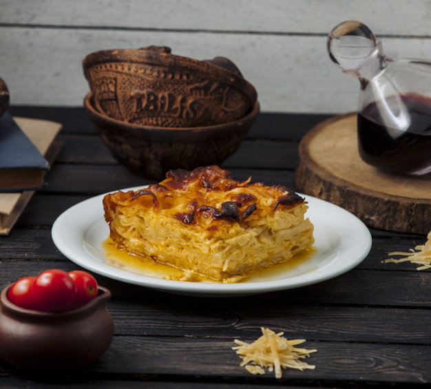

Peynirli su böreği
Malzemeler
- 1 kg un
- 11 adet yumurta
- 100 gram tereyağı
- Yarımşar su bardağı sıvı yağ ve süt
- Yarım kg beyaz peynir
- 1'er demet dereotu ve fesleğen
- Yeteri kadar su
- Tuz
Nasıl yapılır?
- Unu düz bir zemine döküp ortasını havuz gibi açın. 10 adet yumurtayı içine kırın ve tuz ekleyip yoğurun. Daha sonra dinlenmeye bırakın.
- 10 dakika ara ile yoğurma işlemini 5 kez tekrarlayın.
- Hamuru 10 parçaya ayırıp tepsinizin büyüklüğünde açın.
- Geniş bir tencerede tuzlu su hazırlayıp kaynatın.
- Yufkaları bu suda 1 dakika haşlayın. Hemen soğuk suya atın ve süzün.
- Bir kapta tereyağı, sıvı yağ, süt ve 1 adet yumurtayı karıştırın.
- Tepsiye bir adet yufka koyup üzerine kaşıkla sütlü karışımdan dökün. Bu şekilde 5 adet yufkayı tepsiye yerleştirin.
- Beyaz peyniri ufalayıp ince kıyılmış dereotu ve fesleğen ile karıştırın. Yufkaların üstüne bu karışımı dökün. Kalan yufkaların aralarına sütlü karışımdan dökerek peynirli harcın üstüne koyun.
- Tepsiyi ocağa oturtun. Kısık ateşte altı kızarana kadar pişirin.
- Altı kızardığında üstüne bir başka tepsi kapatarak alt üst edin ve diğer tarafı da kızartın. Dilimleyerek servis yapın.
AFİYET OLSUN